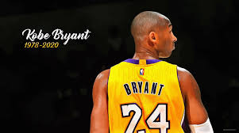

Oque é Basquetebol?
O basquete é um esporte de equipe jogado entre duas equipes de cinco jogadores cada. O objetivo é marcar pontos arremessando a bola através de um aro elevado na extremidade oposta da quadra. Os jogadores driblam a bola enquanto se movem e passam para colegas de equipe. O basquete é conhecido por sua rapidez, habilidade e estratégia. É jogado em diferentes níveis, desde amador até profissional, e é popular em todo o mundo.
Principais jogadores de Basquetebol
Os cinco maiores jogadores de basquete geralmente incluem: 1. Michael Jordan: Considerado por muitos como o maior jogador de todos os tempos, Jordan dominou a NBA durante sua carreira com os Chicago Bulls, conquistando seis títulos de campeonato e inúmeras premiações individuais. 2. LeBron James: Uma força dominante na NBA há mais de uma década, LeBron é conhecido por sua versatilidade e habilidade em todas as áreas do jogo. Ele conquistou vários títulos de campeonato e é reconhecido como um dos melhores jogadores de todos os tempos. 3. Kareem Abdul-Jabbar: Com o recorde de pontos marcados na história da NBA, Abdul-Jabbar é um ícone do basquete. Ele ganhou seis títulos da NBA e é reverenciado por sua habilidade inigualável no jogo interno. 4. Magic Johnson: Um dos maiores armadores da história do basquete, Magic liderou o Los Angeles Lakers a várias conquistas de campeonatos da NBA durante os anos 1980. Sua habilidade de passe e visão de jogo eram incomparáveis. 5. Kobe Bryant: Conhecido como "Black Mamba", Kobe foi um dos competidores mais ferozes e talentosos da história da NBA. Ele ganhou cinco títulos de campeonato com o Los Angeles Lakers e deixou um legado duradouro no esporte após sua trágica morte em 2020.
